Employee Guide
Everything an employee can do in TechNova HR without contacting HR. Sign in with the Employee demo account (Tharushi Perera, password demo1234) to follow along.
Video: 08 — Employee self-service
1. Your dashboard
Navigation: Sidebar → My Dashboard
Your dashboard greets you and shows today's clock-in status, your leave balance, your latest payslip, recent attendance, pending requests, upcoming public holidays, your goals and quick actions (Apply leave, View payslip, My performance, Ask AI assistant).
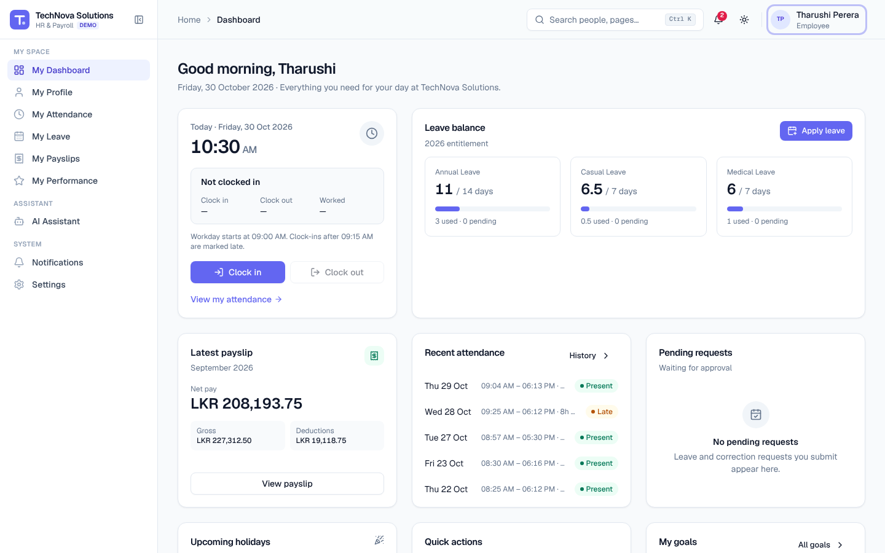
2. Clock in and clock out
- On the dashboard or My Attendance, click Clock in when you start work. The time is recorded in your local time zone and your status changes to Working since ….
- Click Clock out when you finish. You'll see how long you worked, e.g. Completed — 7h 35m.
If you clock in after 09:15 the day is marked Late. Clock-in isn't available on weekends, public holidays or days you're on approved leave.
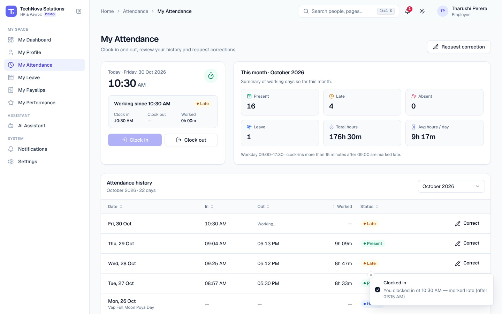
Fix a mistake
Forgot to clock out? On My Attendance, click Request correction (or Correct on a history row), choose the date, the corrected times and a reason, then Submit request. Your manager reviews it and you're notified of the decision.
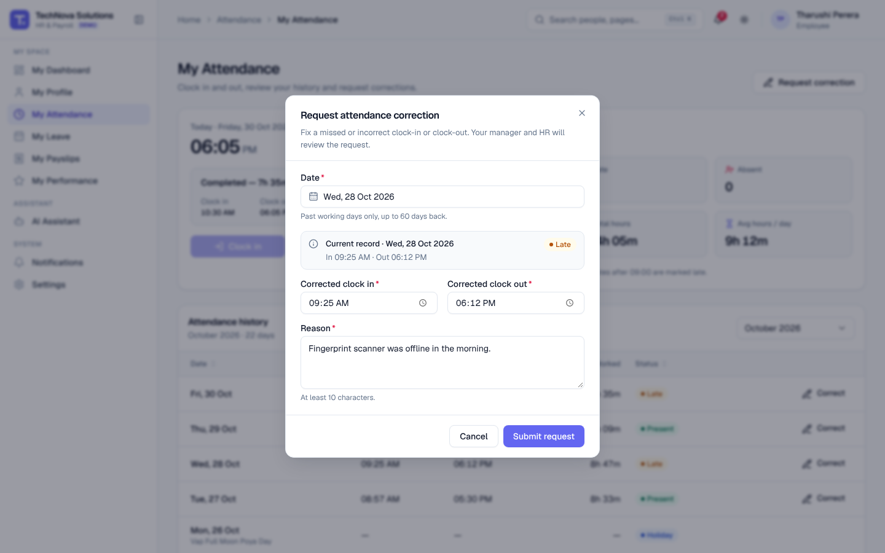
Video: 03 — Attendance management
3. Check your leave balance
Navigation: Sidebar → My Leave
Each card shows how many days you have available out of your yearly allocation, and how many are used or pending. Pending requests are already deducted so you never over-book.
| Leave type | Days per year (illustrative) |
|---|---|
| Annual Leave | 14 |
| Casual Leave | 7 |
| Medical Leave | 7 |
| Unpaid Leave | No limit (deducted from pay) |
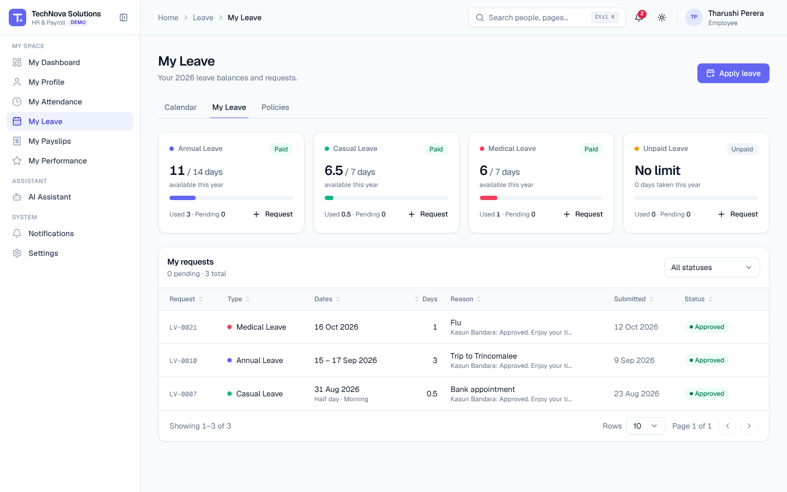
4. Apply for leave
- Go to My Leave and click Apply leave.
- Choose the Leave type.
- Pick the Start date and End date. Weekends and public holidays are skipped automatically.
- For a half day, turn on Half day and choose Morning or Afternoon.
- Write a short Reason and attach a document if needed (e.g. a medical certificate).
- Check the Summary — working days, balance before and after.
- Click Submit request.
Your request appears as Pending, and your manager is notified. When they approve or reject it you get a notification and the status changes under My requests. You can Cancel a pending or upcoming request at any time.
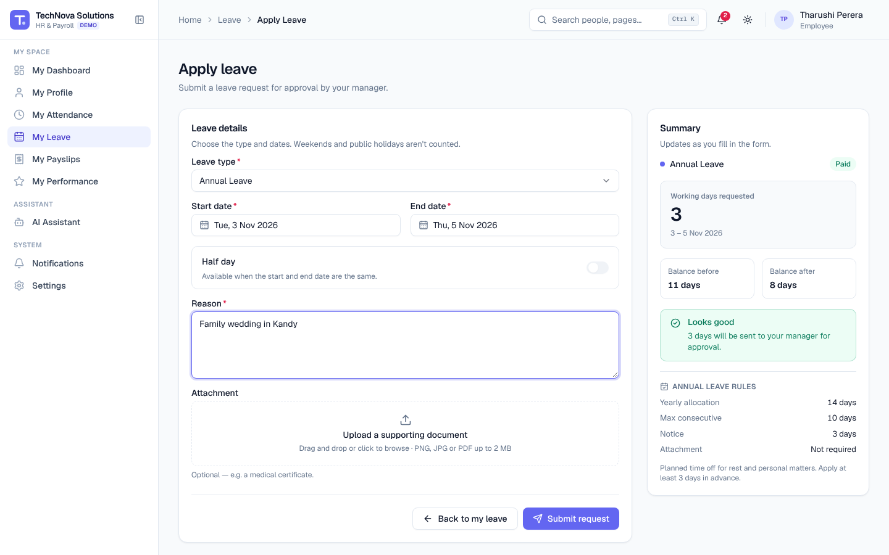
Video: 04 — Leave management
5. View your payslips
Navigation: Sidebar → My Payslips
Your latest payslip is highlighted at the top. Click Open latest payslip (or View on any month) to see earnings, deductions (EPF, APIT, loans) and your net pay. Use Download PDF to save it or Print for a paper copy.
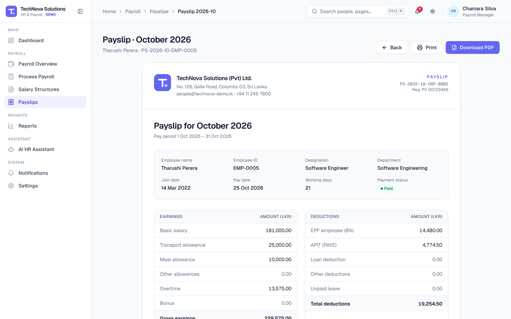
6. View your performance
Navigation: Sidebar → My Performance
See your latest rating, every submitted review and your goals. Update a goal's progress and click Update, add a new goal with Add goal, or click Start self evaluation to rate yourself.
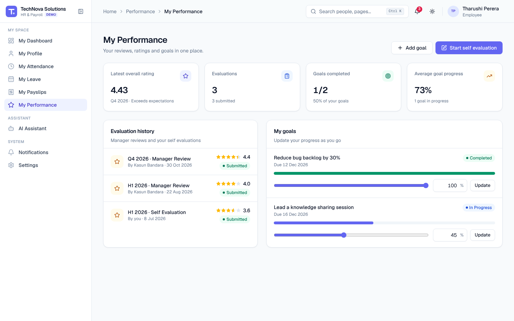
7. Update your profile
Navigation: Sidebar → My Profile → Update contact details
Change your phone number, address, emergency contact and photo, then click Save details. Your employment and salary details are maintained by HR and Payroll.
8. Use the AI assistant
Navigation: Sidebar → AI Assistant
Ask in plain English:
- How many leave days do I have?
- Show my attendance this month.
- What is my latest salary? / Show my payslip.
- What is the annual leave policy?
- Can I apply for leave tomorrow?
- Apply for annual leave next Monday for 2 days
When you ask it to apply for leave, the assistant checks your balance and shows the request for you to review. Nothing is submitted until you click Confirm and submit.
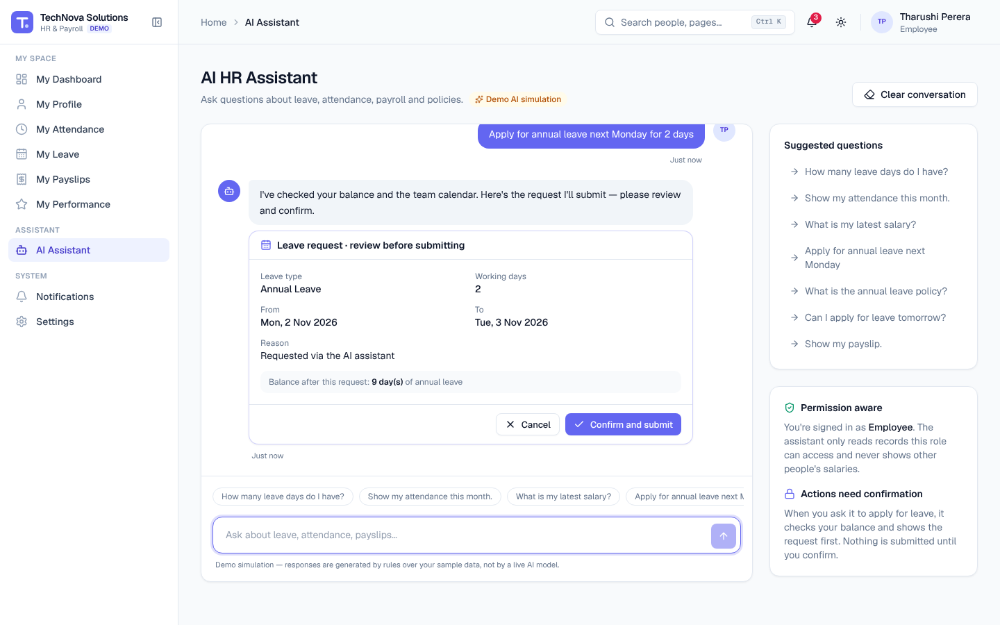
Video: 07 — AI HR Assistant
The assistant is a demo simulation that answers from your own HR records. It never shows other people's information.
9. On your phone
Everything works on a phone: tap ☰ to open the menu, and forms and dialogs adapt to the screen.
| Dashboard | Apply leave | Payslip |
|---|---|---|
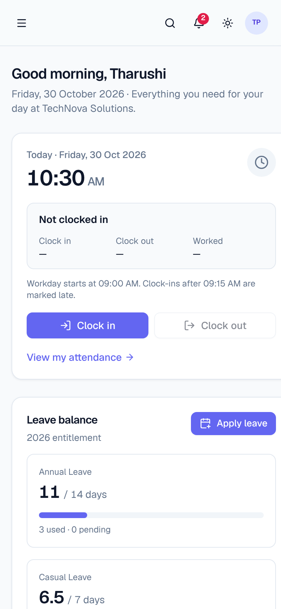 |
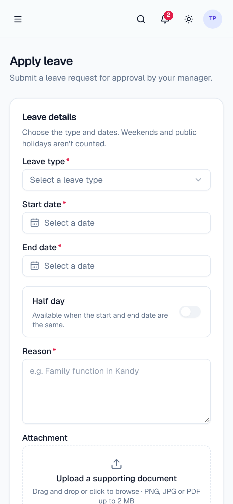 |
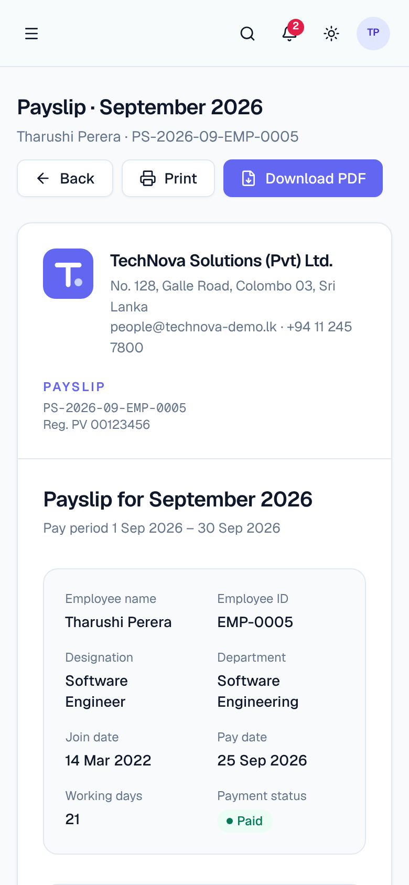 |